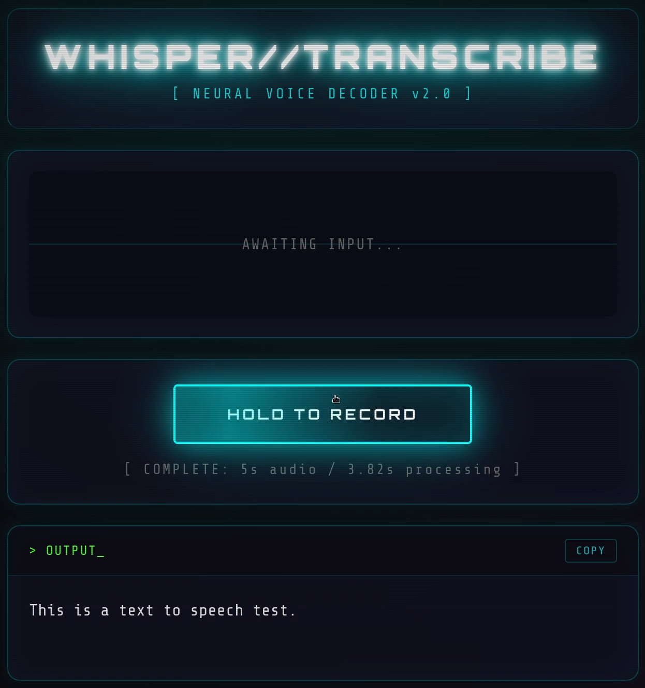

Whisper on the Radeon 890M: Local Speech-to-Text on Linux with ROCm
ROCm finally supports Strix Point - and I had the perfect use case: replacing Wispr Flow with 500 lines of Python.
AMD recently added ROCm support for Strix Point GPUs. That means the integrated Radeon 890M (gfx1150) can now run GPU-accelerated ML workloads on Linux. I used this to run OpenAI's Whisper locally and build a small, entirely offline voice-to-text app that replaces Wispr Flow in about 500 lines of Python.
Switching to Linux for Real Performance
Up until this point, my main machine had been a MacBook with Apple Silicon (M4) - fast, reliable, and a great fit for my day-to-day work and development projects. But for what I wanted to do next, that wasn't quite enough.
I needed accurate, undistorted performance measurements for low-level network I/O work on Linux - real io_uring measurements without VMs or compatibility layers in the way.
So I finally did something I'd secretly wanted for a while: get a proper Linux laptop.
The result was a brand-new Tuxedo: an AMD Ryzen AI 9 HX 370 with 96 GB RAM, running Ubuntu 24.04. It turned out to be a beast. Everything worked out of the box - my Zig toolchain, Neovim builds in 15 seconds, all my usual workflows. Compile times rivaled the M4.
The transition felt almost boringly smooth. Everything carried over without friction - until I pressed the hotkey and nothing happened.
One thing I hadn't thought about at all was voice-to-text. On macOS, Wispr Flow had quietly become part of my daily workflow - quick notes, emails, documentation drafts. When I tried to replicate that on Linux, things got complicated fast.
Why Existing Linux Solutions Didn't Work
My search for a Linux replacement was kind of frustrating. The options I found were a combination of:
- Difficult to install with complex dependencies
- Didn't work out of the box
- Required cloud APIs (defeating the "local" purpose I had in mind)
- Didn't support my hardware
I started researching the underlying technology - OpenAI's Whisper models. The question became: Can I just run this myself?
How do I chain microphone input to the model and display results? And what about GPU acceleration? Running Whisper on CPU is painfully slow.
ROCm Finally Supports Strix Point
Here's where timing played in my favor. So I have an AMD Radeon 890M (integrated graphics on the Ryzen AI 9 HX 370) - that's the new Strix Point architecture, internally called gfx1150.
When I first searched for solutions with ROCm support, everything I found was outdated. No mentions of gfx1150 anywhere. I was ready to accept CPU-only inference.
But I did not want to accept this so easily, and by diging deeper, I discovered that AMD had just released ROCm support for Strix Point. The stars aligned - I got my laptop right around the time my GPU became a first-class citizen in the ROCm ecosystem!
Building a Local Whisper App
With GPU acceleration now possible, I sat down to build something. The implementation was surprisingly fast - especially for someone who doesn't do much Python. I expected quite some low-level wrangling. Instead, I had a working prototype within an hour.
Here's what I used:
FastAPI for the backend. I'd never used it before, but it's remarkably clean. Two endpoints: one to serve the HTML page, one POST endpoint for transcription. That's it.
PyTorch + Whisper for inference. This was the real surprise. Loading the model and running inference is almost trivial:
device = "cuda" if torch.cuda.is_available() else "cpu"
model = whisper.load_model("medium", device=device)
# Later, in the endpoint:
result = model.transcribe(audio_path)
return {"text": result["text"]}
No complex setup. No manual tensor management. PyTorch's ROCm integration means I just say "cuda" and it routes to my AMD GPU transparently.
Browser APIs for the frontend. The MediaRecorder API captures audio from the microphone, the Web Audio API provides real-time frequency data for visualization. The flow:
- User holds button →
navigator.mediaDevices.getUserMedia({ audio: true }) - Audio streams into MediaRecorder, accumulating chunks
- Simultaneously, an AnalyserNode feeds frequency data to a canvas for the live visualizer
- User releases → audio blob sent as FormData POST to
/transcribe - Backend saves to temp file, runs
model.transcribe(), returns JSON - Frontend displays result, auto-selects text for easy copy
The visualizer was a fun addition. 64 frequency bars, mirrored around the center, with a cyan-to-magenta gradient and glow effects. The Web Audio API's getByteFrequencyData() makes this almost too easy - you get an array of frequency amplitudes, map them to bar heights, done. Added some CSS scanlines and a vignette for that CRT aesthetic - most of the styling came from earlier projects.
The entire app is a single Python file - backend, HTML, CSS, and JavaScript all inline. Around 500 lines total.
The result:

Image: Screenshot UIPlace image at: arender/output/whisper-on-the-radeon-890m-local-speech-to-text-on-linux-with-rocm/images/screenshot-ui.png